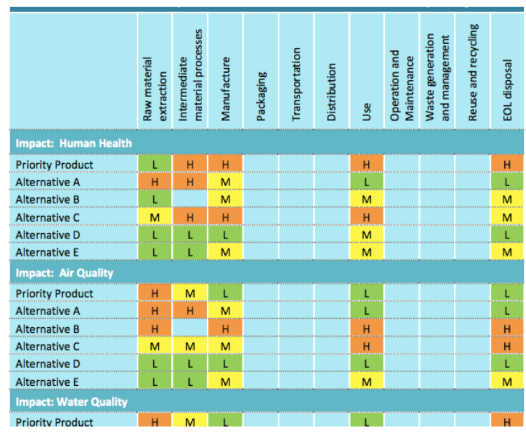

Contents
Resource 6: Life Cycle Considerations¶
Introduction to Life Cycle Thinking and Life Cycle Assessment¶
Life Cycle Thinking (LCT)¶
Life cycle thinking (LCT) has become an important approach on which businesses increasingly rely to inform decision-making and to identify opportunities to offset negative impacts. LCT is essential because it can help lessen the negative and improve the positive impacts of products and services by informing the design and decision-making process. When you use life cycle thinking, your decisions should “reflect a broad perspective and include consideration of the full life cycle of the product.” This includes considering impacts to workers, consumers, and the environment across the life cycle and the supply chain.(IC2) LCT is used to identify life cycle stages where there are significant differences between alternatives. It helps prevent burden shifting, i.e. ensuring that changes at one stage of the life cycle, in one geographic region, or in one impact category do not result in increased impacts elsewhere. LCT can be used to evaluate impacts without the conducting a full LCA. The basic tenets behind LCT are: - To think about a chemic./product/process not as a single, static, entity but as a dynamic continuum that starts with raw materials and ends with an EOL scenario. - To avoid undesirable burden shifting from one stage in a product life cycle to another due to changes in product formulation or design - To look at product impacts from a cradle-to-grave (or “Cradle-to-Cradle”) perspective and to identify potential environmental, economic, or social impacts for each life cycle phase, in order to foster choices that support innovation and benefits over the full life cycle.
Life cycle thinking (LCT) and life cycle inventory and life cycle impact assessment (L./A) allow you to consider and measure environmental impacts from materials and products across the life cycle.
Life Cycle Assessment¶
LCA is a tool that allows quantitative assessment of differences between materials for a set of impact categories. Designers should evaluate options using LCT first to screen materials for obvious differences in sustainability performance. Then, where it is more difficult to distinguish sustainability impacts, materials should be evaluated and compared using LCA. LCA is a standardized methodology (ISO 14040 series) for accounting for aspects and impacts tied to material and energy inputs and emissions associated with a product, process or service. Results vary depending on how the system boundaries are defined. It is often used to find ‘hot spots’ or areas of greatest impact to identify and target opportunities for improvement. An LCA includes: - Compiling an inventory of relevant energy and material inputs and environmental releases for all life cycle phases evaluated. (Life cycle inventory) - Evaluating the potential environmental and human health impacts associated with identified inputs and releases from processes within phases evaluated. (Life cycle impact assessment) - Interpreting the results to help make an informed decision.
Overview of a Typical Product Life Cycle¶
Life cycle thinking will help you consider the various inputs and outputs your product will require from raw material extraction through end of life.
Common phases in the life cycle of a product include material extraction and processing, manufacturing of product, packaging and distribution, produce use, and end of life. Each of these steps involves using materials a./or energy, and releasing waste and/or pollution.
Common phases in the life cycle¶
Image Credit: Design Technology (Western Academy of Beijing)
Key Steps¶
We recommend the following approach to using LCT and LCA: - Begin with life cycle thinking (LCT). Identify where life cycle impact differences are likely to be more or less substantive. For example, feedstock choice for a base polymer can result in very different life cycle impacts at the production stage. - Obtain standardized, certified LCAs for chemicals, materials or products with a focus only on those impacts that are likely to be substantively different. - Use information gathered from LCT and LCAs to identify “hot spots” – areas with the most significant sustainability impacts – and leverage this knowledge to identify opportunities for improvement across the life cycle.
image¶
Example¶
You can use a matrix like this to compare alternatives across relevant life cycle stages:
Table compares product and alternatives on various impacts (e.g. human health, air quality, and water quality) for each life cycle phase assessed (e.g. raw material extraction, manufacture, use, and disposal), with each intersection rated as low, moderate, or high. 
Tools for Evaluating Life Cycle Sustainability¶
LCA can provide a comprehensive picture of the impacts that a chemical, product or process has on aspects of human health and the environment and can help to manage trade offs. It is also an important tool that can be used to check assumptions. Given the scope and depth of a standard LCA, the biggest challenge can be data availability and understanding the most important system inputs. This can be especially challenging when manufacturing processes and chemical ingredients are held as proprietary information. The CalEPA Alternatives Analysis Guide provides an extensive list of LCA tools in its Appendix 7-2 including the following leading examples:
Challenges with LCA¶
Like all methodologies LCA is limited by available data. Conventional plastics are typically accounted for in well established and standardized LCA databases and software tools. However, newer materials or plastics manufactured in non-conventional ways may need customized data. Standard software packages consider multiple impact categories. In addition, high levels of uncertainty are associated with results and it can be challenging to know if differences are significant or within margins of error.
Given the potential scope of LCA it can be challenging to use LCA in a limited and pragmatic way. One strategy is to limit the scope of the system boundary. Another is to limit the number of aspects and impacts to evaluate. Life cycle thinking (LCT) uses the approach and principles behind LCA to determine whether impacts associated with a given product are likely to be greater, lesser, or similar to those associated with other alternatives.